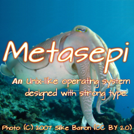

<div class="right-column-nowidth">
<iframe src="//www.facebook.com/plugins/likebox.php?href=https%3A%2F%2Fwww.facebook.com%2Fmetasepi&amp;width=292&amp;height=290&amp;colorscheme=light&amp;show_faces=true&amp;header=true&amp;stream=false&amp;show_border=false&amp;appId=310889061205" scrolling="no" frameborder="0" style="border:none; overflow:hidden; width:292px; height:290px;" allowTransparency="true"></iframe>

<div class="figure">

</div>

</div>


<h1>Metasepi</h1>

<p>
  NetBSD design will be reborn in the functional sea.
</p>

<h2>Blog (English)</h2>
<ul>
  $posts_en$
</ul>

<h2>Blog (Japanese)</h2>
<ul>
  $posts_ja$
</ul>

<h2>Links</h2>
<ul>
  <li><a href="http://ajhc.metasepi.org/">Ajhc Haskell Compiler</a> (<a href="https://github.com/ajhc/">source code</a>)
  <li><a href="https://github.com/metasepi">Metasepi source code</a>
  <li><a href="http://groups.google.com/group/metasepi">Mailing list (en)</a>
  <li><a href="http://twitter.com/metasepi">Twitter</a>
  <li><a href="http://www.facebook.com/metasepi">Facebook</a>
</ul>
